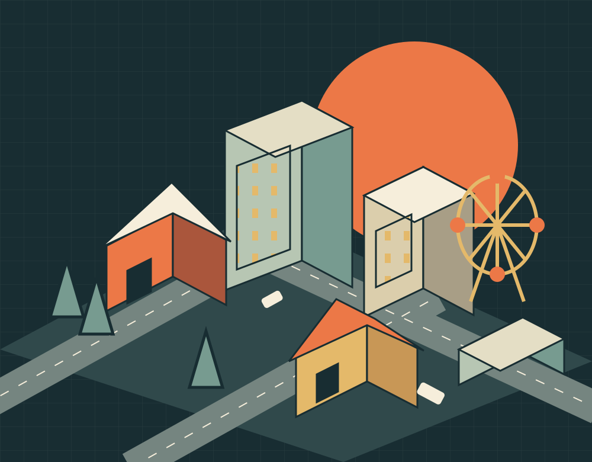

1 à 4
Joueurs connectés simultanément.
SIMULATION · COOPÉRATION · AMBITION
Simulation d’entrepreneur
et gestion coopérative
Armand Zireg Concept v0.1 · À discuter entre amis

Règles retenues. Document de discussion avant développement. Le jeu n’a pas encore de nom officiel. Cette présentation décrit uniquement le concept général ; les huit niveaux détaillés de chaque entreprise feront l’objet d’une présentation distincte.
À définir / à ajuster. Les prix, durées et pourcentages sont des intentions ou des exemples, sans équilibrage définitif. Aucun moteur, architecture, calendrier de développement ou budget n’est fixé. Les illustrations et schémas sont originaux, conceptuels. Polices locales Barlow Condensed et DM Sans, licences OFL dans assets/fonts.
LE PARCOURS
Règles retenues. Le sommaire et les cinq onglets de chapitre mènent aux mêmes ouvertures. Chaque diapositive dispose de règles et précisions contextualisées.
À définir / à ajuster. Les éléments ouverts sont explicitement signalés. Navigation : flèches, Espace, Page précédente/suivante, Début/Fin, molette ou glissement horizontal. S : sélecteur ; F : plein écran ; R : règles ; Échap : fermer un panneau.
PARTIE 01 / 05 · Jouer ensemble
Un monde commun, des rôles libres.
On commence par remplir les rayons. On finit par remplir le garage.
Règles retenues. Jeu de simulation d’entrepreneur et de gestion, seul ou jusqu’à quatre joueurs simultanément. Les tâches physiques sont réalisables par tous les joueurs, avant comme après le recrutement d’employés. Le plaisir vient du métier, puis de la coordination d’un groupe d’entreprises.
Jouer ensemble · Concept général
Les métiers se partagent ; personne ne détient les clés du plaisir.
Joueurs connectés simultanément.
Participants différents sur une même sauvegarde.
Ensemble ou répartis librement entre les entreprises.
Règles retenues. Une partie est hébergée par un joueur. Au moins huit personnes différentes peuvent participer à la sauvegarde au fil du temps, avec quatre connexions simultanées maximum. Chacun personnalise son personnage avant de jouer et choisit une vue à la première ou troisième personne. L’argent et les véhicules appartiennent au groupe. L’hébergeur configure les droits de chacun dans l’interface de gestion. Aucun participant ne doit être indispensable à la poursuite de la partie.
Jouer ensemble · Concept général
Transporter, se retrouver, changer de décor.
Assez de distance pour jouer, sans carte interminable.
Règles retenues. La carte est commune à toutes les entreprises et à tous les joueurs. Elle comprend une ville, des campagnes au nord et un désert au sud. Les déplacements et transports doivent être intéressants sans rendre la carte trop grande. Le dessin indique une organisation conceptuelle, pas un plan définitif.
À définir / à ajuster. Dimensions, tracés et emplacement exact des lieux.
Jouer ensemble · Concept général
Personnalisable, comme les espaces communs.
Gestion globale depuis son ordinateur.
Camion utile ou voiture de luxe : à nous de choisir.
Règles retenues. La maison sert de lobby et de point de départ. Une chambre personnalisable par joueur, un bureau commun, un garage commun et un aménagement personnalisable. Le bureau s’embellit avec la maison. Son ordinateur et ceux de chaque entreprise donnent accès à la gestion globale. Pour améliorer la maison : argent, technologie correspondante et entreprises rentables. Ses huit niveaux ne donnent aucun bonus économique direct. Les véhicules utiles et de plaisir sont achetables et appartiennent au groupe.
Jouer ensemble · Concept général
Tous les connectés dorment : accélération possible.
Jour, nuit ou 24 h/24 ; primes de nuit appropriées.
Au bout de la négligence : hôpital et frais.
Règles retenues. Cycle initial : 30 minutes de jour et 30 minutes de nuit. Une année correspond à dix jours de jeu, valeur à ajuster. Le sommeil de tous les joueurs connectés permet d’accélérer le temps. Les entreprises ont des rythmes différents : les joueurs travaillent eux-mêmes ou emploient des salariés avec les primes de nuit appropriées. Les besoins de nourriture et de boisson sont obligatoires : les négliger jusqu’au bout entraîne une téléportation à l’hôpital et des frais.
À définir / à ajuster. Valeurs temporelles à ajuster ; détails des besoins non fixés.
PARTIE 02 / 05 · Entreprendre
Huit métiers, un socle de gestion partagé.
Un gameplay métier spécifique à chaque activité.
Comptabilité, personnel, bâtiments et équipements.
Des entreprises autonomes, meilleures ensemble.
Règles retenues. Chaque entreprise peut fonctionner seule avec des fournisseurs et des clients PNJ. Les huit entreprises partagent les mêmes principes de gestion, mais pas les mêmes tâches physiques. Présentation brève ici : les huit arbres détaillés seront traités séparément.
Entreprendre · Concept général
Cultures, entretien, récoltes et animaux.
Stocks, rayons, prix, clients et station-service.
Menus, stocks, cuisine, accueil et service.
Extraction, transport, raffinage, transformation et distribution.
Règles retenues. Ferme : inspiration Farming Simulator. Magasin : inspiration Supermarket Together. Restaurant : gestion des menus, stocks, cuisine, accueil et service. Pétrolier : inspiration Fuel Harvest Together ; extraction, transport vers la raffinerie, aménagement de celle-ci, transformation et distribution. Ces titres sont des inspirations citées dans le brief, pas des partenaires ou des captures du projet.
Entreprendre · Concept général
Achat-revente, mécanique, carrosserie, tuning, lavage et station-service.
Attractions, montagnes russes, toboggans, maison hantée et petite restauration.
Clients, stocks, danseuses, réglementation et forces de l’ordre.
Contrats, plans, stocks, construction et démolition.
Règles retenues. Le parc s’inspire de Waterpark Simulator en élargissant le périmètre à un parc de loisirs. Le garage couvre la vente et l’entretien des véhicules. La boîte de nuit combine exploitation nocturne, accueil et contraintes de réglementation fictive. Le BTP intervient sur des bâtiments et infrastructures de la ville, indépendants des bâtiments des entreprises possédées.
Entreprendre · Concept général
Extensions extérieures prédéfinies.
Intérieurs entièrement aménageables dans leur zone.
Champs et enclos · zones d’exploitation · grande zone de loisirs.
Règles retenues. Les bâtiments des entreprises occupent des emplacements prédéfinis ; leurs extensions extérieures le sont aussi. L’intérieur est entièrement aménageable dans les limites de la zone. La ferme aménage son exploitation et débloque champs et enclos. Le pétrolier développe ses zones d’exploitation. Le parc dispose d’une grande zone extérieure librement aménageable avec ses éléments spécifiques. Les chantiers du BTP sont indépendants des locaux possédés par le groupe : il ne construit pas ces locaux.
PARTIE 03 / 05 · Grandir
Quatre progressions, des rythmes distincts.
Capacité du groupe
Espace & esthétique
Expérience métier
Compétences individuelles
Règles retenues. Il existe huit paliers généraux, huit niveaux de maison, huit niveaux pour chaque entreprise et huit niveaux pour chaque employé. Ces quatre systèmes sont distincts. Un palier général ouvre un emplacement supplémentaire jusqu’à huit entreprises ; il n’augmente pas automatiquement les niveaux des entreprises, de la maison ou des employés.
Grandir · Concept général
Une enveloppe de départ commune.
Palier général 1, maison 1, un emplacement.
Choisir l’entreprise, avec sa difficulté indiquée.
Même prix initial X. Pas forcément le même lundi matin.
Règles retenues. Départ : capital fixe, palier général 1, maison niveau 1 et un emplacement d’entreprise. La première entreprise est librement choisie avec une indication de sa difficulté ; elle est achetée au niveau 1. Toutes les entreprises ont initialement le même prix X.
À définir / à ajuster. Montant du capital fixe, prix X et indications précises de difficulté.
Grandir · Concept général
Tous les prérequis débloqués.
Payer les deux coûts.
Chaque entreprise rentable, chacun des trois derniers jours.
Groupe globalement rentable sur les dix derniers jours.
Règles retenues. Pour acheter un palier général, toutes les technologies prérequises doivent être débloquées, puis les points de technologie nécessaires et une somme d’argent dépensés. Chaque entreprise doit être rentable sur chacun des trois derniers jours. Le groupe doit être globalement rentable sur les dix derniers jours. Les investissements majeurs sont exclus de cette appréciation de rentabilité. Chaque nouveau palier ouvre un emplacement de plus, jusqu’à huit.
À définir / à ajuster. Coûts et modalités de calcul, sans résoudre ici l’équilibrage.
Grandir · Concept général
Retenu
Des bonus utiles, mais modérés.
À définir
Formule des points et contenu de l’arbre général.
Règles retenues. Les technologies générales sont achetées avec des points issus des bénéfices réalisés sur les ventes finales aux PNJ. Les transferts internes ne génèrent pas directement de points. L’arbre général proposera de petits bonus utiles mais modérés.
À définir / à ajuster. La formule de génération des points et le contenu de l’arbre général ne sont pas définis.
Grandir · Concept général
Section numérique accessible : extension, présentoirs et stock restent à payer.
Petits outils → engins lourds → grues et grands contrats au niveau 8.
Exemples d’intention · Acquisition payante et facultative.
Règles retenues. Chaque entreprise est achetée au niveau 1. Ses activités génèrent de l’expérience jusqu’au niveau 8. Les niveaux débloquent automatiquement l’accès aux contenus ; leur acquisition est payante et facultative. Exemple : au niveau 6 du magasin, la section numérique exige d’acheter extension, présentoirs et stock. BTP : petits outils et petits travaux au départ, puis camions et engins lourds ; au niveau 8, grues et contrats d’immeubles ou d’autoroutes.
À définir / à ajuster. Ces exemples ne constituent pas un arbre de progression détaillé final.
Grandir · Concept général
Chaque entreprise commence au même prix X.
Les entreprises restantes deviennent plus chères au fil du groupe.
Les revenus existants facilitent légèrement les nouveaux départs.
Un empire finance la suite. Il ne doit pas la rendre triviale.
Règles retenues. Le coût des entreprises restantes augmente avec les acquisitions et la progression. Les revenus existants facilitent légèrement les nouveaux démarrages, sans supprimer l’intérêt de développer la huitième entreprise. La difficulté évolue avec les paliers généraux et les niveaux des entreprises.
À définir / à ajuster. Déclencheur précis de hausse du coût, montants, progression de difficulté et formules d’équilibrage.
PARTIE 04 / 05 · Échanger
Créer de la valeur en reliant les activités.
L’intégration économise des intermédiaires. Elle ne fabrique pas de billets.
Règles retenues. Chaque entreprise peut fonctionner avec des fournisseurs et clients PNJ. Il n’y a pas de concurrence directe à simuler : le pétrolier du joueur est présenté comme seul exploitant de son activité, tandis que le garage peut choisir entre plusieurs fournisseurs. Les échanges internes réduisent les marges payées aux intermédiaires mais ne créent pas d’argent par simple transfert dans la trésorerie commune.
Échanger · Concept général
Débouché garanti.
Marge ↔ demande.
Normalement, sauf pénurie.
Vider le stock peut sauver la trésorerie. Pas le modèle économique.
Règles retenues. Les joueurs fixent leurs prix entre un minimum et un maximum selon le marché. Au minimum, le débouché est garanti mais la vente se fait à perte. Au maximum, normalement aucune vente sauf pénurie. Entre les deux, arbitrage entre marge et demande. Le débouché à perte permet de continuer à jouer et de récupérer de la trésorerie depuis les stocks ; il ne redresse pas durablement une entreprise mal gérée.
À définir / à ajuster. Bornes et relation précise entre prix et demande.
Échanger · Concept général
Pétrolier → PNJ 100 €/L
PNJ → Garage 120 €/L
Garage → Client PNJ 150 €/L
Pétrolier → Garage 50 €/L
Garage → Client PNJ 150 €/L
50 € : répartition interne seulement.
Exemple fictif, non réaliste · Totaux du groupe avant coût de production et autres charges identiques.
Règles retenues. Comparaison pour un litre : à l’extérieur, le pétrolier reçoit 100 €, le garage paie 120 € au PNJ puis revend 150 €, soit 130 € pour le groupe avant coût de production et autres charges. En interne, le pétrolier reçoit 50 € du garage, qui revend 150 €, soit 150 € pour le groupe avant les mêmes coûts : gain de 20 €/L. Les 50 € répartissent les résultats des deux entreprises ; ils ne créent aucune richesse supplémentaire dans la caisse commune. Ces prix sont purement fictifs et ne prétendent pas être réalistes.
Échanger · Concept général
| Fournisseur | Flux | Destinataires |
|---|---|---|
| Ferme | Produits agricoles → | Magasin · Restaurant · Parc · Boîte de nuit |
| Pétrolier | Carburants → | Stations du magasin et du garage |
| Pétrolier | Carburant → | Véhicules et engins du groupe |
| Garage | Entretien des véhicules → | Ferme · Pétrolier · BTP |
| Restaurant | Restauration → | Parc · Boîte de nuit |
| Magasin | Approvisionnements adaptés → | Autres activités |
Règles retenues. Ces six relations sont retenues. Il n’est pas nécessaire de forcer un lien artificiel pour chaque entreprise. Les flux internes complètent les possibilités de recours aux PNJ. Les achats entre entreprises peuvent être ponctuels ou automatisés.
Échanger · Concept général
Disponible à faible coût ; commandes groupées plus avantageuses.
Depuis notre magasin, transporter nous-mêmes évite la livraison payante.
Pas de péremption si les conditions sont respectées.
Règles retenues. Les achats entre entreprises peuvent être ponctuels ou automatisés. Les livraisons sont disponibles automatiquement à faible coût ; regrouper les commandes est plus avantageux que multiplier les petits envois. Exemple : recevoir le sel en un lieu puis le répartir entre restaurant, parc et boîte de nuit. Pour un achat auprès de leur magasin, les joueurs peuvent assurer eux-mêmes le transport et éviter une livraison payante. La conduite manuelle n’est pas obligatoire au début. Pas de péremption si la conservation est adaptée ; les produits frais pourrissent hors stockage réfrigéré.
Échanger · Concept général
Matériel réparable
Maintenance ou garage, selon le matériel approprié.
Véhicules
Usure par le temps et les événements aléatoires.
Un créneau raté n’abîme pas le camion. Le temps, si.
Règles retenues. Les équipements s’usent, peuvent casser, puis être détruits. Les agents de maintenance et le garage peuvent réparer le matériel approprié tant qu’il n’est pas détruit. Les collisions ne dégradent pas les véhicules : leur usure dépend du temps et d’événements aléatoires.
PARTIE 05 / 05 · Piloter
Déléguer, traverser les crises, profiter.
Travail principalement réalisé par les joueurs.
Les petites tâches passent aux employés.
Opérations délégables ; gestion conservée par les joueurs.
Règles retenues. Ces seuils concernent le niveau de chaque entreprise. Aux niveaux 1–2, les joueurs réalisent principalement le travail. Dès le niveau 3, les petites tâches peuvent être déléguées. Dès le niveau 6, les opérations sont délégables mais les joueurs gardent la gestion. Tous les joueurs peuvent toujours réaliser les tâches physiques des employés.
Piloter · Concept général
Un point dans chaque compétence.
Base 100 % chacune · Niveau N = N points répartis aléatoirement · +10 points de pourcentage par point.
Règles retenues. Chaque employé conserve un métier et possède un niveau de 1 à 8, un salaire, un contrat à durée déterminée (CDD) ou indéterminée (CDI), une ancienneté et trois compétences. Efficacité : vitesse d’exécution du travail ; rapidité : déplacement ; endurance : temps avant pause. Base de 100 % pour chacune. Un employé de niveau N possède N points de bonus au total, répartis aléatoirement. Un point ajoute dix points de pourcentage à une compétence. Niveau 3 avec un point partout : 110 %, 110 %, 110 %.
Piloter · Concept général
Choisir parmi des profils et salaires différents.
Le niveau des candidats ne dépasse pas le palier général.
Progression en travaillant ou via des formations payantes.
Règles retenues. Le recrutement passe par une offre adaptée au marché, puis le choix entre des candidats aux profils et salaires différents. Le niveau des candidats est limité au palier général : au palier 3, niveaux 1 à 3. Les employés progressent par leur travail ou des formations payantes. L’ancienneté ajoute un bonus de dix points de pourcentage dans une compétence par année et augmente le salaire. Les employés peuvent être mutés entre entreprises mais ne changent pas de métier.
À définir / à ajuster. Modalités précises de l’ancienneté et de la hausse de salaire.
Piloter · Concept général
Horaires de travail, pauses et heures d’ouverture réglables.
Salles de pause, avantages et salaires satisfaisants.
Grèves et démissions si les conditions ne suivent pas.
Le baby-foot ne remplace pas la fiche de paie.
Règles retenues. Prévoir des salles de pause et des avantages. Des conditions ou salaires insatisfaisants peuvent provoquer grèves et démissions. Les horaires de travail, pauses et ouvertures sont réglables. Les employés sont mutables entre entreprises tout en conservant leur métier. Rompre un contrat coûte normalement cher ; la liquidation constitue une exception de gameplay permettant le licenciement sans pénalité de liquidation.
À définir / à ajuster. Montants et modalités détaillées des contrats, avantages et conflits sociaux.
Piloter · Concept général
Un réparateur présent peut traiter une panne.
Sinon, un joueur intervient.
Décoration, menu, prix, stocks, personnel et finances.
Règles retenues. Au restaurant niveau 6, les opérations sont délégables, mais les joueurs gèrent notamment la décoration, le menu, les prix, les stocks, le personnel et les finances. Un réparateur peut intervenir sur une panne s’il est présent ; sinon, le joueur intervient. Acheter et installer de nouveaux équipements reste une décision des joueurs. L’autonomie opérationnelle ne supprime donc ni les décisions ni les interventions possibles.
Piloter · Concept général
Deux enjeux distincts ; déclarations largement préremplies.
Décoration, propreté et service comptent dans les lieux de sortie.
Emprunts et découvert possibles ; contrôles et sanctions possibles.
Règles retenues. Fiscalité fictive : le joueur peut faire une erreur de déclaration ou réduire volontairement les chiffres ; un contrôle peut entraîner des sanctions. Aucune réglementation réelle détaillée n’est simulée. Impôts et cotisations sont deux enjeux distincts. La qualité d’accueil, la décoration, la propreté et le service comptent au restaurant, à la boîte de nuit et au parc. Cette mécanique n’est pas prévue pour le BTP, le pétrolier ou le garage. Emprunts et découvert sont possibles.
À définir / à ajuster. Application de la qualité d’accueil au magasin à préciser ; modalités financières et sanctions à définir.
Piloter · Concept général
Base de revente des investissements
dans les biens physiques concernés.
La progression propre à l’entreprise liquidée.
La progression générale et les autres entreprises.
Mutation ou licenciement sans pénalité de liquidation.
Règles retenues. En cas de difficultés graves, une ou plusieurs entreprises peuvent être liquidées. Base de revente : sommes investies dans les biens physiques concernés divisées par deux ; propriété, matériel et stocks sont concernés. Les employés sont mutés ou licenciés sans pénalité de liquidation dans les règles du jeu. La progression de l’entreprise liquidée est perdue ; celle du groupe et des autres entreprises est conservée.
À définir / à ajuster. Traitement exact des biens détruits ou consommés ; solution de dernier recours après liquidation totale.
Piloter · Concept général
Un événement modifie la situation.
Les joueurs doivent intervenir.
La décision déclenche un effet de type 1 ou 2.
Règles retenues. Événements positifs et négatifs au ton comique. Exemples : des militants écologistes bloquent le pétrolier ; une manifestation perturbe la circulation et endommage un restaurant ; une tempête cause des dégâts et apporte de nouveaux contrats de réparation pour les maisons et les véhicules. Trois catégories : effet passif, actions à réaliser, choix entraînant des conséquences de type 1 ou 2.
À définir / à ajuster. Les exemples ne sont pas affectés définitivement à une catégorie et leurs effets chiffrés ne sont pas fixés.
Piloter · Concept général
Toutes rentables simultanément.
Atteinte sur le compte commun.
La réussite se matérialise chez nous.
Ensuite : optimiser, décorer, collectionner, relever des défis exceptionnels.
Règles retenues. Trois succès matérialisent notamment l’empire : toutes les entreprises rentables simultanément, une somme X sur le compte et la maison au niveau maximal. Après la progression, continuer à optimiser les entreprises, personnaliser la maison, collectionner des véhicules et réaliser des défis et contrats exceptionnels.
À définir / à ajuster. Montant du succès financier et contenu des défis / contrats exceptionnels.
Piloter · Concept général
Le plaisir de jouer existe dès le premier jour.
Les échanges rendent les entreprises complémentaires.
Déléguer libère du temps pour gérer et profiter.
Notre réussite commune. Nos petites catastrophes aussi.
Règles retenues. Synthèse du concept : expérience physique des métiers, progression de l’entreprise, délégation, échanges et réinvestissement. La coopération reste libre et la caisse commune ; aucun joueur ne doit devenir indispensable. La réussite se prolonge dans la gestion, la maison, les véhicules et les défis. Aucun mécanisme supplémentaire n’est ajouté par cette synthèse.
Piloter · Concept général
Quel métier nous attire ? Qu’a-t-on envie de faire ensemble ?
Arbre général, formules, coûts, difficulté, ancienneté et dernier recours.
Chaque entreprise et ses huit niveaux, en détail.
Merci ! Armand Zireg · Concept v0.1
Règles retenues. Ce document fixe les intentions du concept général et les distingue des décisions ouvertes. Les arbres détaillés des huit entreprises sont réservés à un document distinct.
À définir / à ajuster. Formule des points de technologie et arbre général ; prix X, capital de départ, coûts et déclencheur de hausse des acquisitions ; courbes de difficulté ; année de dix jours à ajuster ; modalités d’ancienneté ; qualité d’accueil au magasin ; traitement des biens détruits ou consommés en liquidation ; dernier recours après liquidation totale. Les valeurs présentées ne sont pas équilibrées définitivement. Les questions de discussion n’ajoutent aucune règle.